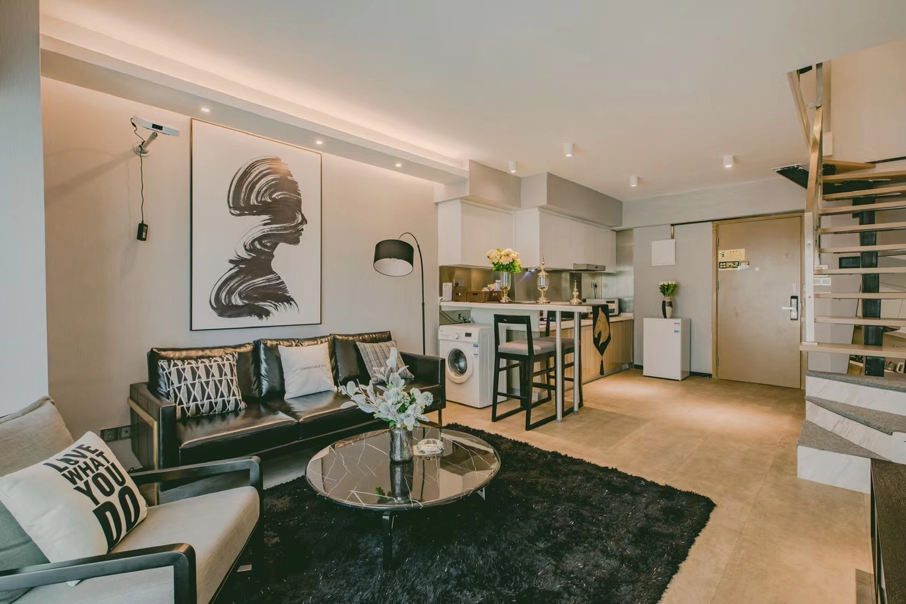

准备把和芝麻的每一次出去玩都记录下来，做成很有意义的一个系列。
就先从武汉先开始吧，因为前两次南京和长沙由于太过久远，但是可能只能靠使劲回忆了。应该之后会找时间有空做（先把坑挖好，啥时候填就不知道了狗头）
本来最近事还挺多的，os和问求的lab的bug都de不出来。。。不过正因为de不出来好像就有空了
图片好像都有点大，我以后再调调
为什么是武汉
因为芝麻的清明假期变长了所以可以出去玩了！
首先为什么会选择武汉这样一个城市呢？
当然是因为它近啦！ 地处湖南和江苏之间，避免了从我们一个人呆腻了的地方到另一个人呆腻了的地方，当然是我们见面的最好地点了！
其实是打着电话翻着中国地图，看着看着突然
“要不去武汉吧！”
“好啊好啊！”
“好，那订票吧！”
然后就买票了。。。什么叫说走就走的旅行啊kora！
那就出发吧！（多图预警）
住
这还是第一次带芝麻住民宿，我之前唯一一次民宿还是在高三暑假在上海，所以很多注意事项都忘了，导致走了有(fei)点(chang)多的冤枉路，在这里也是记录一下以后一定要记得😭。
首先，一定要在去之前联系好商家，加上微信，给一个很清晰，易辨认的地址指路！
因为大多数民宿都是私人的，木有前台，登记啥的都是在微信上进行的，所以到了地方再联系很不方便。而且一般这种民宿或酒店式公寓没有啥门面，真的很不好找！！！我们在一条重复的路上至少走了三个来回😡😡😡
房型loft式两层90 $m^2$，看着其实还算挺不错，蛮温馨的。（忘记拍房间全景了就直接拿卖家秀了）

但问题是毕竟是民宿，床啊到处的卫生和酒店比起来还是稍微差一点点，以及真的很不方便，躺床上突然想到啥东西没拿就得下楼拿qwq，晚上黑黑的好怕怕（
然后这个淋浴质量很差！水忽大忽小，忽冷忽热！😡
但是毕竟空间大，装修好看，还有个投影仪看电影（还有个洗衣机忘记带衣服来洗了），体验也不算太差，看完了《夏洛特烦恼》，好看！
还可以练摄影（

不过还是决定以后不住民宿了。
吃
能够让我对一个城市充满热情与好奇的应该只有美食了吧，本来对武汉的吃的倒没什么印象，不过看了几期盗月社的视频我又觉得我可以了！
原视频指路：
无非是吃碗5元的热干面，武汉老板娘竟要把女儿嫁给我？！只因为我……
果然，武汉太好吃了！！
热干面
提到武汉第一个想到的就是热干面，来到武汉怎么能不吃热干面呢，应该没有人能拒绝撒上香浓的芝麻酱的热干面吧！
精粉世家
第一家吃的是一家网红店，可能反而还不太正宗，应该是热干面的创新做法，融入辣这个元素，所以它真的好辣好辣好辣。
我点的这个是牛肉加牛肚拌面，25元，芝麻酱的浓香和爆辣的味道神奇地并存了。
芝麻不吃内脏所以点的牛肉拌面，不过让我感到惊奇的是，她的吃辣能力居然出人意料得高，这个面的辣基本已经快到达的我的承受上限了，npy 居然也能接受，真是太好了，不愧是长沙人！看来地理因素是真的可以锻炼一个人的吃辣能力的！
严老幺的热干面
这家早餐店真是我心中的神，不过我们后面再聊，这里只看他家的热干面。
然后我发现没有拍他家的热干面的图。。。不过其实我好像也没吃上主要是npy吃的，芝麻酱很不错。
蔡林记
说实话这家店名是我在照片里的饭盒上面找到的（滑稽）。
因为这是在临走前在kfc旁看到，想着在离开武汉前感受一下热干面的感觉，于是果断放弃了kfc奔向了这家随意的热干面店。
这倒是我在武汉第一次正经吃一整晚正经热干面，真的好好吃！从芝麻又吃了一碗就可以看出来了（超小声）。加了牛肉只要15r，不加肉的只要5.5r，武汉的芝麻酱真的和我至今吃的都不太一样，偏黑一点，说明芝麻含量很高，有很浓的芝麻香（！芝麻确实香），会甜一点点，拌匀了沾在每一根面条上，一口吃下去真是太美妙了www。
偷放一张npy吃两碗热干面没有问题吧
绿茶
这顿是我的好同学好朋友好兄弟土桥一哥华科校草zj我展哥请的，在此再次感谢他！
虽然这是一家浙江菜，不过在武汉吃杭帮菜也并没有什么问题嘛，也挺符合芝麻的口味的！甚至武汉还有长沙臭豆腐和南京大牌档呢。中规中矩不过也确实很美味，直接上图。
鱼肉并不是很嫩，而且npy不喜欢醋hhh
鸡肉的话一样不是特别嫩，不过虾和绿茶糕（是叫这个名字吧反正是个糕点）都挺好吃。
严老幺烧麦
终于到了最后我要隆重推荐的这家早餐店（可能也不只是早餐了），真的是我来武汉的最大收获，宝藏店，经济实惠，太好吃了！
从这个排队人数来看就知道他家有多火爆了。
这就是他家的特色招牌——重油烧麦了，8元4个。让我感到惊奇的是这个烧麦和我长这么大吃过的所有烧麦味道都不一样，我原以为世界上所有烧麦都是外面面皮，里面是干干的酱油糯米。可严老幺家烧麦，如其名，重油，是用猪油拌的糯米，还有很多的肉粒在里面，才使得这个烧麦一口下去香软多汁，油香四溢（不行了我口水要留出来了）。可以喝汤吃着吸溜的烧麦你吃过吗，这真的是给我打开了烧麦新世界的大门，我才知道原来烧麦是可以做成这的。不过也正因为他太重油了，芝麻不能接受猪油的味道，所以她享受不了这个美味了，真是太遗憾了！
他家也有生冻的烧麦卖，要不是我是从学校去的，如果从武汉回家我一定要带八十个回去。
这也是严老幺家的招牌——豆皮，也是这家店排队的主要原因，因为它的制作时长比其他产品久很多，做一锅就要很久而且分不到几碗，建议一开始就直接排队豆皮，然后在排队途中可以把另外几种给吃到ovo。
不过味道相比来说就诶有那么惊艳了，zj之前也提到过豆皮比较一般。不过豆皮加猪油糯米饭加肉末加笋丁真的是强大的是碳水和能量，一顿顶一天！
然后他家的小笼汤包也很好吃，不过我居然发现这个也忘记拍照了！！哭
关于这个小笼包还发生了个有趣的事，他家点单和取东西是分开的，取小笼包需要一个红牌牌，会在点单的时候给，但是我的红牌牌被npy拿走去排队了然后我就一直以为没有牌牌，和那个大妈理论了好久😵，结果最后看到芝麻拿着那个牌牌人都傻了🐷。（没错我终于装上了emoji插件了，可以更生动地展现心情了😆）
小结
很显然得可以看到，武汉的食物很重要的一个特点就是重油、高碳水，这样在现代饮食结构下看来不是很健康的食物特色，却是在清末到民国时期，武汉所兴盛起来的码头商业所延续下来的传统。只有这样简单的，油炸高碳水才能为劳累的码头工人快速摄取大量能量，也就形成了武汉这样独具特色的过早文化。
所以它真的非常经济实惠而且符合我的口味啊啊啊啊😋，一顿人均不超过20r就可以吃的巨无敌饱也太幸福了吧，我简直可以天天呆在武汉吃烧麦，热干面！
不过天天吃应该可能要三高了吧（
所以也能看出来芝麻真的好健康，第一次高油食物居然是被我带着吃的，太罪恶了哈哈哈😈。
玩
惠惠子最喜欢的美食环节结束了，就到了妍妍子最喜欢的玩了🐶，芝麻真的超爱玩，超爱到处走。
江汉路
江汉路真不愧是武汉最有名的商业区，吃的好多，店好多，人也好多。所以才会在武汉三天天天都去了那。
那里的建筑真的好好看，不是亮丽的繁华，倒像是忽然闯进了欧洲，或是穿到了民国。
所以有好多好多情侣在这拍婚纱照，一路上看到不下五对，真是个不错的选景www！
然后套娃拍一个正在拍照的芝麻😜。
长江边
也就是江汉门那，我们曾花了好几分钟站在江边思考这个是不是长江（
武汉的长江真的别具风味，因为我好像也只见过靖江的长江，但显然武汉的长江要来的更宏伟华丽一些。

水阔天高，江风阵阵，对岸是万家灯火，把黑夜照得彻亮，美得惊心动魄。
又有点上海外滩的感觉，但少了几分上海滩的那种迷醉感，是大气，磅礴，敞亮，有生活的浸润感。
略微有点遗憾是没能坐上游轮😢
华中科技大学
进门还被门卫凶了😠
跟着展哥逛完了华科，感觉一个字——太大了。
华科占地七千多亩，我搜了下南大仙林两千八百亩。。。
华科的生态真的好好，有好多好多参天大树，又粗又长，真的是我在我学校里从来未能见到的生态环境（据说他们就是靠种树圈地的），好喜欢好喜欢。
然后还带领者华科两年原住民第一次逛他自己的校史馆😂
华科真的很大，大到仿佛一个社区，有幼儿园，有小学中学，有小区，甚至有菜市场（？？？），看来说可以在里面过一辈子真的不夸张哈哈哈哈。
所以他们还有公共电瓶车羡慕了555
还有很多有意思的地方，传说中的绝望坡。
然后展哥送我的扑克牌放npy包里忘拿了💫
东湖 落雁
按照芝麻的科普，东湖应该是分很多的景区的，由于时间原因我们只参观了落雁这一个景区。
风景还是非常不错的！拍了很多美美的风景和漂亮妹妹！
不过我不打算给别人看太多我的漂亮妹妹！
给你们看个包子吧！
我深刻地记得这个地方因为这是我第一次被npy拉着早起😭😭😭
总之
除了酒店的忽冷忽热的淋浴头，多走了很多冤枉路，地铁坐反了，没带充电器拿了芝麻的充电宝结果忘给她了，etc之外，武汉之旅还是非常愉快的！
从原来觉得武汉还是个蛮平凡的，除了热干面想不到其他特色的城市，到离开时产生了二刷的想法，在这个过程里才发现了这座城市的吸引人之处。
直接拿pyq的文案了😛
武汉不是一座现代化到让人感到慌张的城市，
更多的应该是烟火气，市井气，浓油酱赤。
拥有着与其相同美丽的人们生活着，
华灯初上和厚重历史能够在这里并存，平静祥和。